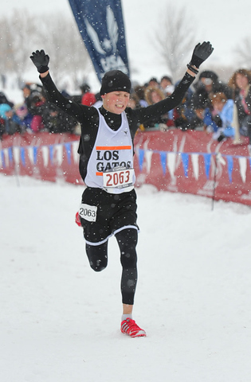

Samuel Blake
2009 Midget Boys JO XC National Champion!

Midget Boys runner, Samuel Blake, awins teh Midget Boys race with a late race surge.
by Bob Burns
Link to Top PA Midgets Photos and Finish Times
Sam Blake has few peers when it comes to multi-tasking. He juggles straight A’s in middle school with overlapping schedules of swimming and running. His mother sometimes catches him watching YouTube clips of Olympic track on his computer while polishing off a math or history assignment. No sweat.
Sam particularly enjoys watching the tactics used by the great Ethiopian runner, Kenenisa Bekele.
“I like the way he waits until everyone else is fading and then just takes off,” Sam said. “He’s pretty much unbeatable.”
It might be a bit soon to compare him to Bekele, but Sam Blake has few peers at his age level when it comes to distance running. He clocked a 4:56 mile last spring as an 11-year-old. He won the Midget Boys title at the 2009 USATF National Junior Olympic Cross Country Championships in Reno, outracing a field of 233 finishers in a snowstorm.
Blake covered the 3,000-meter course at Rancho San Rafael Regional Park in 10 minutes, 12 seconds, imitating Bekele’s late-race surge to win by 13 seconds. It was the second national championship for Blake, a Campbell resident who competes for the Los Gatos Athletic Association Track Club. Despite being a year younger than most of the top challengers, he won the 2008 Junior Olympic title in Virginia by a three-second margin.
“Last year I tried to raise my arms up as I finished but I was too tired to lift them,” said Blake, who turned 12 on Nov. 18. “I was able to raise them this time. It was really fun.”
Sam’s mother wonders whether he was born to run.
“I have four kids, and his was the only pregnancy when I kept running,” Susie Blake said. “He was running as soon as he could walk. He’d have to run up and down the hallway before he could get to sleep.”
For the time being, at least, running must give way to swimming. Sam is an excellent swimmer who, because of a fortuitous birthday, hopes to clean up in the pool this spring. This fall, he mixed in three or four swim practices a week while running about the same amount. Rather than compete in the 2010 Junior Olympic Track and Field Championships in Sacramento, he plans to concentrate on swimming and the Far Western Regionals.
When he finished one recent cross country race and his mom said he must be exhausted, Sam said it was nothing compared to a hard workout in the pool.
“The pain you feel in running comes from breathing,” Sam explained. “It’s not really physical pain like you feel in swimming, when your whole body is tired.”
Susie Blake, a former professional triathlete, coaches Sam in both sports. She stopped competing when she had the third of her four children (Sam is the second-oldest).
“We have the philosophy that we want to save him so he he’s running well when he’s 17 or 18,” Susie Blake said. “I think he’ll eventually choose running, but we’re a swimming family, and he enjoys doing both sports. He’s only 12.”
Normally, as defending champion, Blake would have been considered the favorite, but Sam said that wasn’t necessarily the case.
“I felt like I had the potential to win, but most of the kids in the race didn’t know me since I didn’t run JO track last spring,” Sam said.
Two feet of snow fell on the day of the race. Blake said the cold caused his chest to hurt in the first half of the race, but it didn’t keep him from making a decisive move going up a hill with about 700 meters to go. He finished 13 seconds ahead of the runner-up, Ryan Alexander of Southern California’s Equalizers.
“It was really cold and there wasn’t really a designated trail because there was so much snow on the ground,” Sam said.
In addition to winning the 2008 national midget title, Blake braved snowy conditions to finish fifth in the Bantam Boys class at the 2007 National Junior Olympics in Lawrence, Kansas.
“Two of his three national races had inclement conditions, so I guess it doesn’t bother him too much,” said Sam’s father, John Blake.
With Blake and teammate Steven Sum finishing 1-3 in Reno, Los Gatos finished second in the team battle with 38 points, just five points behind the first-place Southern California Roadrunners.
“I like the team aspect of cross country,” Blake said. “On the starting line, you can be nervous along with other people you know.”
While he’ll trade his running shoes for a swim suit this spring, Sam figures he’ll eventually concentrate on track.
“In the end, I’ll probably be better at running,” he said. “My goal is to make it to the Olympics in track. After the Olympics, if I make it, my goal is to do the Ironman Triathlon. I always feel happy when I do something really hard. I like the more strenuous sports because you can push yourself.”